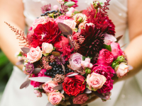

25-60-60")
Свадебные букеты
Свадебный букет — это не просто украшение, а важный символ одного из самых значимых и трогательных дней в вашей жизни. В Julia's Flowers мы понимаем, что каждый момент свадьбы важен, и создаём букеты, которые подчеркнут стиль невесты, её индивидуальность и общую концепцию торжества. Наши свадебные букеты — это искусство, воплощённое в цветах, которое будет с вами на протяжении всего дня и навсегда останется в ваших воспоминаниях.

Мы подбираем только свежие и качественные цветы, ориентируясь на актуальные тренды и предпочтения наших клиентов. Независимо от того, какой стиль свадьбы вы выбрали — от классической романтики до современного минимализма, наши флористы создадут букет, который будет идеально гармонировать с вашим образом. Мы уделяем внимание каждому элементу, от формы букета до сочетания оттенков, чтобы он стал настоящим произведением искусства, подчеркивающим вашу красоту.
Кроме того, мы предлагаем индивидуальные решения для дополнения свадебного букета: ленты, броши, декоративные элементы, жемчужины и стразики, которые сделают ваш букет ещё более уникальным и запоминающимся. Такие детали могут добавить дополнительную изысканность и стать прекрасным акцентом на фоне свадебного платья. Мы также можем предложить специальные варианты упаковки, которые придадут вашему букету особый стиль.
Для нас важно, чтобы каждый свадебный букет не только радовал глаз, но и отражал вашу любовь, счастье и стиль жизни. Пусть ваш букет станет символом нового этапа вашей жизни, который будет сопровождать вас на протяжении всего дня, став настоящим украшением свадьбы.
Перейти на главную страницу